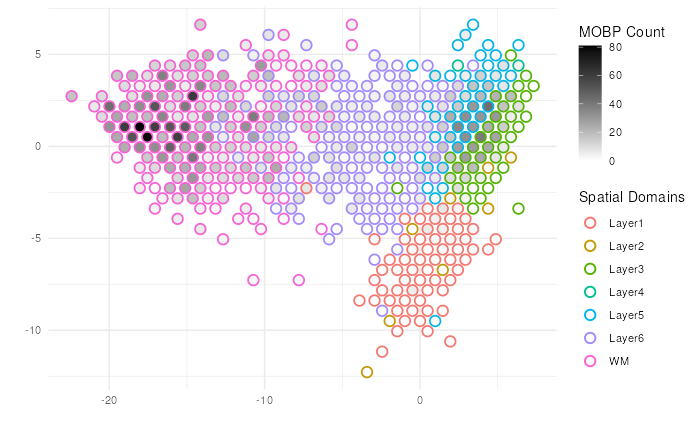

Beyond Sequence-based Spatially-Resolved Data
Source:vignettes/more_than_visium.Rmd
more_than_visium.RmdStarting from Version 1.2.0, escheR package supports
additional two data structures as input, including SpatialExperiment
and data.frame from base R. In addition,
escheR supports in-situ visualization of image-based
spatially resolved data, which will be the focus of future
development.
Visualized Dimensionality Reduced Embedding with
SingleCellExperiment
SpatialExperiment inherits
SingleCellExperiment
Following the same syntax, one can also visualize dimensionality
reduced embeddings of a SpatialExperiment object by
providing the argument dimred with a non-null value. Hence,
the first 2 columns of the corresponding reducedDim(spe)
assay will be used as the x-y coordinate of the plot, replacing
spatialCoords(spe).
library(escheR)
library(STexampleData)
library(scater)
library(scran)
spe <- Visium_humanDLPFC() |>
logNormCounts()
spe <- spe[, spe$in_tissue == 1]
spe <- spe[, !is.na(spe$ground_truth)]
top.gene <- getTopHVGs(spe, n=500)
set.seed(100) # See below.
spe <- runPCA(spe, subset_row = top.gene)
make_escheR(
spe,
dimred = "PCA"
) |>
add_fill(var = "ground_truth") +
theme_minimal()
Hex Binning
spe$counts_MOBP <- counts(spe)[which(rowData(spe)$gene_name=="MOBP"),]
spe$ground_truth <- factor(spe$ground_truth)
# Point Binning version
make_escheR(
spe,
dimred = "PCA"
) |>
add_ground_bin(
var = "ground_truth"
) |>
add_fill_bin(
var = "counts_MOBP"
) +
# Customize aesthetics
scale_fill_gradient(low = "white", high = "black", name = "MOBP Count")+
scale_color_discrete(name = "Spatial Domains") +
theme_minimal()
> Note 1: The strategy of binning to avoid overplotting is previously
proposed in schex.
While we provide an implementation in escheR, we would
caution our users that the binning strategy could lead to intermixing of
cluster memberships. In our implementation, the majority membership of
the data points belonging to a bin is selected as the label of the bin.
Users should use the binning strategy under their own discretion, and
interpret the visualization carefully.
Note 2:
add_fill_bin()shoudl be applied afteradd_ground_bin()for the better visualization outcome.
Image-based SpatialExperiment Object
To demonstrate the principle that escheR can be used to
visualize image-based spatially-resolved data pending optimization, we
include two image-based spatially resolved transcriptomics data
generated via seqFish platform and Slide-seq V2 platform respectively.
The two datasets have been previously curated in the STexampleData
package
seqFISH
library(STexampleData)
library(escheR)
spe_seqFISH <- seqFISH_mouseEmbryo()
make_escheR(spe_seqFISH) |>
add_fill(var = "embryo")
NOTE: trimming down the
colData(spe)before piping into make-escheR could reduce the computation time to make the plots, specifically whencolData(spe)contains extremely large number of irrelavent features/columns.
SlideSeqV2
library(STexampleData)
library(escheR)
spe_slideseq <- SlideSeqV2_mouseHPC()
make_escheR(spe_slideseq) |>
add_fill(var = "celltype")
Beyond Bioconductor Eco-system
We aim to provide accessibility to all users regardless of their
programming background and preferred single-cell analysis pipelines.
Nevertheless , with limited resource, our sustaining efforts will
prioritize towards the maintenance of the established functionality and
the optimization for image-based spatially resolved data. We regret we
are not be able to provide seamless interface to other R pipelines such
as Seurat and Giotto in foreseeable
future.
Instead, we provide a generic function that works with a
data.frame object as input. For example, relevant features
in Suerat can be easily exported as a
data.frame object manually or via
tidyseurat[https://github.com/stemangiola/tidyseurat]. The exported
data frame can be pipe into escheR.
library(escheR)
library(Seurat)
pbmc_small <- SeuratObject::pbmc_small
pbmc_2pc <- pbmc_small@reductions$pca@cell.embeddings[,1:2]
pbmc_meta <- pbmc_small@meta.data
#> Call generic function for make_escheR.data.frame
make_escheR(
object = pbmc_meta,
.x = pbmc_2pc[,1],
.y = pbmc_2pc[,2]) |>
add_fill(var = "groups")Session information
utils::sessionInfo()
#> R version 4.3.2 (2023-10-31)
#> Platform: x86_64-pc-linux-gnu (64-bit)
#> Running under: Ubuntu 22.04.3 LTS
#>
#> Matrix products: default
#> BLAS: /usr/lib/x86_64-linux-gnu/openblas-pthread/libblas.so.3
#> LAPACK: /usr/lib/x86_64-linux-gnu/openblas-pthread/libopenblasp-r0.3.20.so; LAPACK version 3.10.0
#>
#> locale:
#> [1] LC_CTYPE=en_US.UTF-8 LC_NUMERIC=C
#> [3] LC_TIME=en_US.UTF-8 LC_COLLATE=en_US.UTF-8
#> [5] LC_MONETARY=en_US.UTF-8 LC_MESSAGES=en_US.UTF-8
#> [7] LC_PAPER=en_US.UTF-8 LC_NAME=C
#> [9] LC_ADDRESS=C LC_TELEPHONE=C
#> [11] LC_MEASUREMENT=en_US.UTF-8 LC_IDENTIFICATION=C
#>
#> time zone: UTC
#> tzcode source: system (glibc)
#>
#> attached base packages:
#> [1] stats4 stats graphics grDevices utils datasets methods
#> [8] base
#>
#> other attached packages:
#> [1] BumpyMatrix_1.10.0 scran_1.30.0
#> [3] scater_1.30.0 scuttle_1.12.0
#> [5] STexampleData_1.10.0 SpatialExperiment_1.12.0
#> [7] SingleCellExperiment_1.24.0 SummarizedExperiment_1.32.0
#> [9] Biobase_2.62.0 GenomicRanges_1.54.1
#> [11] GenomeInfoDb_1.38.0 IRanges_2.36.0
#> [13] S4Vectors_0.40.1 MatrixGenerics_1.14.0
#> [15] matrixStats_1.1.0 ExperimentHub_2.10.0
#> [17] AnnotationHub_3.10.0 BiocFileCache_2.10.1
#> [19] dbplyr_2.4.0 BiocGenerics_0.48.1
#> [21] escheR_1.3.1 ggplot2_3.4.4
#>
#> loaded via a namespace (and not attached):
#> [1] jsonlite_1.8.7 magrittr_2.0.3
#> [3] ggbeeswarm_0.7.2 magick_2.8.1
#> [5] farver_2.1.1 rmarkdown_2.25
#> [7] fs_1.6.3 zlibbioc_1.48.0
#> [9] ragg_1.2.6 vctrs_0.6.4
#> [11] memoise_2.0.1 DelayedMatrixStats_1.24.0
#> [13] RCurl_1.98-1.13 htmltools_0.5.7
#> [15] S4Arrays_1.2.0 curl_5.1.0
#> [17] BiocNeighbors_1.20.0 SparseArray_1.2.2
#> [19] sass_0.4.7 bslib_0.5.1
#> [21] desc_1.4.2 cachem_1.0.8
#> [23] igraph_1.5.1 mime_0.12
#> [25] lifecycle_1.0.4 pkgconfig_2.0.3
#> [27] rsvd_1.0.5 Matrix_1.6-2
#> [29] R6_2.5.1 fastmap_1.1.1
#> [31] GenomeInfoDbData_1.2.11 shiny_1.7.5.1
#> [33] digest_0.6.33 colorspace_2.1-0
#> [35] AnnotationDbi_1.64.1 rprojroot_2.0.4
#> [37] dqrng_0.3.1 irlba_2.3.5.1
#> [39] textshaping_0.3.7 RSQLite_2.3.3
#> [41] beachmat_2.18.0 labeling_0.4.3
#> [43] filelock_1.0.2 fansi_1.0.5
#> [45] httr_1.4.7 abind_1.4-5
#> [47] compiler_4.3.2 bit64_4.0.5
#> [49] withr_2.5.2 BiocParallel_1.36.0
#> [51] viridis_0.6.4 DBI_1.1.3
#> [53] hexbin_1.28.3 highr_0.10
#> [55] rappdirs_0.3.3 DelayedArray_0.28.0
#> [57] rjson_0.2.21 bluster_1.12.0
#> [59] tools_4.3.2 vipor_0.4.5
#> [61] beeswarm_0.4.0 interactiveDisplayBase_1.40.0
#> [63] httpuv_1.6.12 glue_1.6.2
#> [65] promises_1.2.1 grid_4.3.2
#> [67] cluster_2.1.4 generics_0.1.3
#> [69] gtable_0.3.4 metapod_1.10.0
#> [71] BiocSingular_1.18.0 ScaledMatrix_1.10.0
#> [73] utf8_1.2.4 XVector_0.42.0
#> [75] ggrepel_0.9.4 BiocVersion_3.18.0
#> [77] pillar_1.9.0 stringr_1.5.0
#> [79] limma_3.58.1 later_1.3.1
#> [81] dplyr_1.1.3 lattice_0.22-5
#> [83] bit_4.0.5 tidyselect_1.2.0
#> [85] locfit_1.5-9.8 Biostrings_2.70.1
#> [87] knitr_1.45 gridExtra_2.3
#> [89] edgeR_4.0.1 xfun_0.41
#> [91] statmod_1.5.0 stringi_1.7.12
#> [93] yaml_2.3.7 evaluate_0.23
#> [95] codetools_0.2-19 tibble_3.2.1
#> [97] BiocManager_1.30.22 cli_3.6.1
#> [99] xtable_1.8-4 systemfonts_1.0.5
#> [101] munsell_0.5.0 jquerylib_0.1.4
#> [103] Rcpp_1.0.11 png_0.1-8
#> [105] parallel_4.3.2 ellipsis_0.3.2
#> [107] pkgdown_2.0.7 blob_1.2.4
#> [109] sparseMatrixStats_1.14.0 bitops_1.0-7
#> [111] viridisLite_0.4.2 scales_1.2.1
#> [113] purrr_1.0.2 crayon_1.5.2
#> [115] rlang_1.1.2 KEGGREST_1.42.0